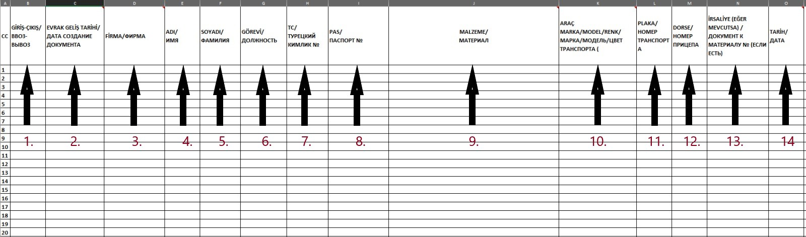

Akkuyu Nükleer Güç Sahasına Malzeme Giriş-Çıkış İşlemleri Talimatı:
1. Excel Formunun Doldurulması: Akkuyu sahasına giriş-çıkış yapacak malzemelerle ilgili formu, aşağıdaki kurallara uygun şekilde
eksiksiz doldurunuz.
2. Gönderim: Doldurulan Excel dosyasını, e-posta konusu “Malzeme Talep Formu Hk.” olacak şekilde, Teoman Fazlı
teoman.fazli@t2ic.com adresine iletiniz.
3. Güvenlik Departmanında İmza: Form gönderildikten sonra yalnızca firmanızın malzeme işlemlerinden sorumlu yetkilisi,
Güvenlik Departmanı Ofisine gelip malzeme giriş-çıkış evrağını imzalamalıdır. Şoförlerin imza atma yetkisi bulunmamaktadır.
4. İmza Saatleri: İmza işlemleri en geç 15:30’a kadar yapılmalıdır. Bu saatten sonra imza kabul edilmemektedir.
ÖNEMLİ: İlgili süreçlerin düzenli ve hızlı şekilde tamamlanabilmesi adına, belirtilen kurallara
titizlikle uyulması gerekmektedir.
Malzeme Giriş-Çıkış Formu Doldurma Talimatları:
1. "Giriş-Çıkış": Malzeme talebinizdeki malzemeler sahaya girecekse "Giriş", sahadan çıkacaksa "Çıkış" olarak belirtilmelidir.
2. "Evrak Geliş Tarihi": Malzeme evrağının hazırlandığı tarih bilgisi eklenmelidir.
3. "Firma": T2-IC JV/FİRMA İSMİNİZ olacak şekilde yazılmalıdır.
4. "Ad": Malzemeyi getirecek personelin adı yazılmalıdır.
5. "Soyad": Malzemeyi getirecek personelin soyadı yazılmalıdır.
6. "Görevi": Malzemeyi getirecek personelin görevi belirtilmelidir.
7. "TC": Personel Türkiye Cumhuriyeti vatandaşıysa TC Kimlik Numarası girilmelidir.
8. "Pas": Personel yabancı uyrukluysa Pasaport Numarası eklenmelidir.
9. "Malzeme": Malzeme detayları açıkça yazılmalıdır. Örnek: "1 adet diz üstü bilgisayar, marka: HP,
model: y12, renk: siyah, seri no: 5465465456." Diğer malzemeler araya virgül konularak eklenmelidir.
10. "Araç Marka/Model/Renk": Malzemeler izinli bir araçla taşınacaksa araç bilgileri marka/model/renk olarak yazılmalıdır. Taşıyacak araç izinsizse,
Tuğba Yay'a tugba.yay@t2ic.com tek seferlik işlem için mail gönderilmelidir.
11. "Plaka": Malzemeyi taşıyacak aracın plaka bilgisi belirtilmelidir.
12. "Dorse": Dorse varsa dorse plakası eklenmelidir.
13. "İrsaliye": İrsaliye varsa irsaliye numarası yazılmalı ve PDF olarak eklenmelidir.
14. "Tarih": Malzemenin giriş veya çıkış yapacağı tarih açıkça belirtilmelidir.
ÖNEMLİ: Bu adımlara uygun doldurulmuş formun, işlemlerin hızla tamamlanması adına eksiksiz ve doğru bilgilerle
hazırlanması önemlidir.

1. Branda
2. İnşaat ve montaj köpüğü
3. Ahşaptan yapılan malzemeler
Dikkat Edilmesi Gereken Hususlar:
• Branda ve inşaat-montaj köpüğü için:
• Yanabilirlik değeri G-1’den az ve alev yayılma değeri RP-1’den az olmalıdır.
• Alternatif olarak, EN 13501-1 “İnşaat Ürünleri ve Malzemelerinin Yangın Tehlikesine
Göre Sınıflandırılması” gereğince yanabilirlik değeri B-1’den az olan malzemeler kabul edilebilir.
• Ahşap malzemeler için:
• Yangına dayanıklı kaplama uygulanmamış ahşap malzemelerin sahaya girişi yasaktır.
• Yangına dayanıklı kaplama uygulanmış ahşap malzemelerin girişine izin verilir, ancak
bunun kanıtı olarak HSE-AKU-P-104-21 “Akkuyu NGS İnşaat Tesislerinde Yanıcı Malzemelere Yangından Koruma İşlemlerinin
Yapılması Prosedürü” çerçevesinde ilgili dokümanlarla desteklenmesi zorunludur.
NOT: Gerekli belgeler olmadan yapılacak başvurular işleme alınmayacaktır.